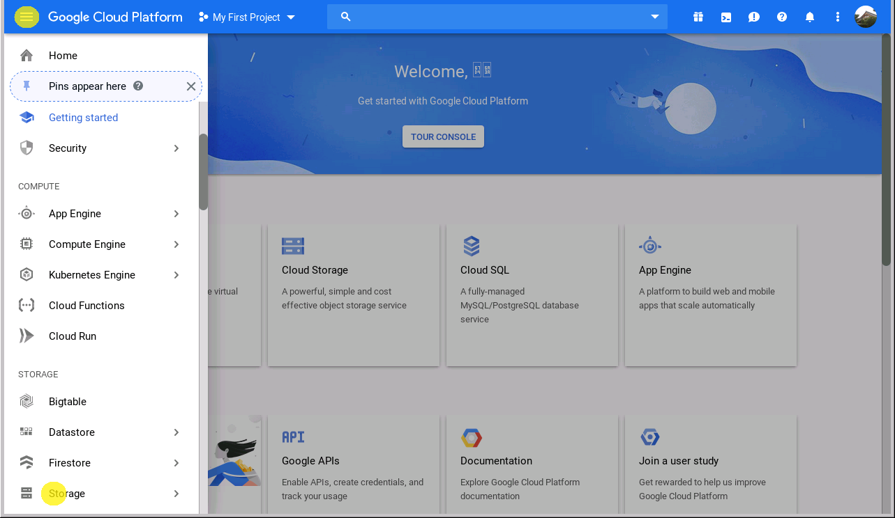
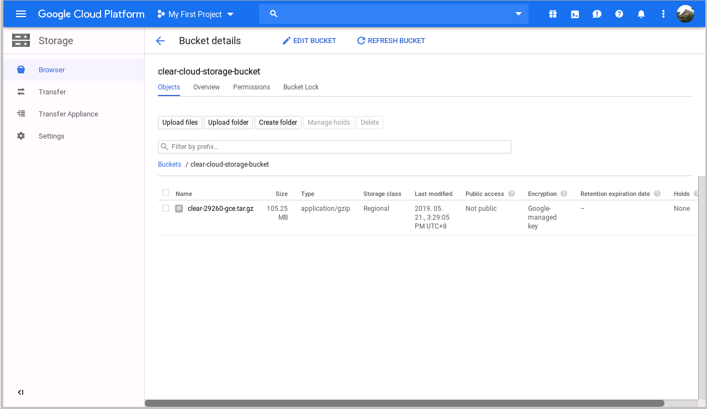
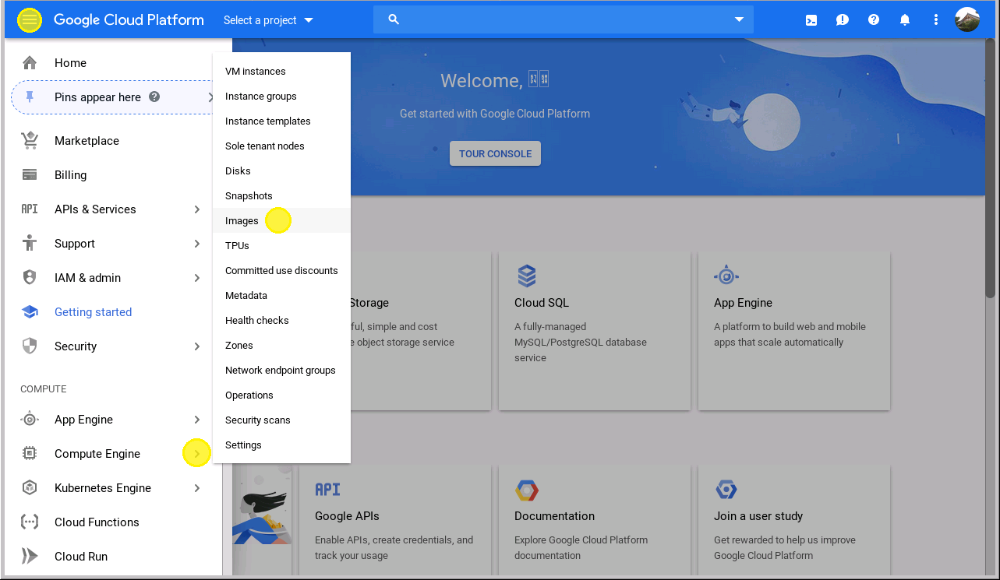
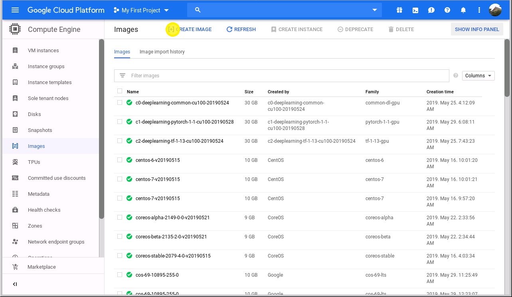
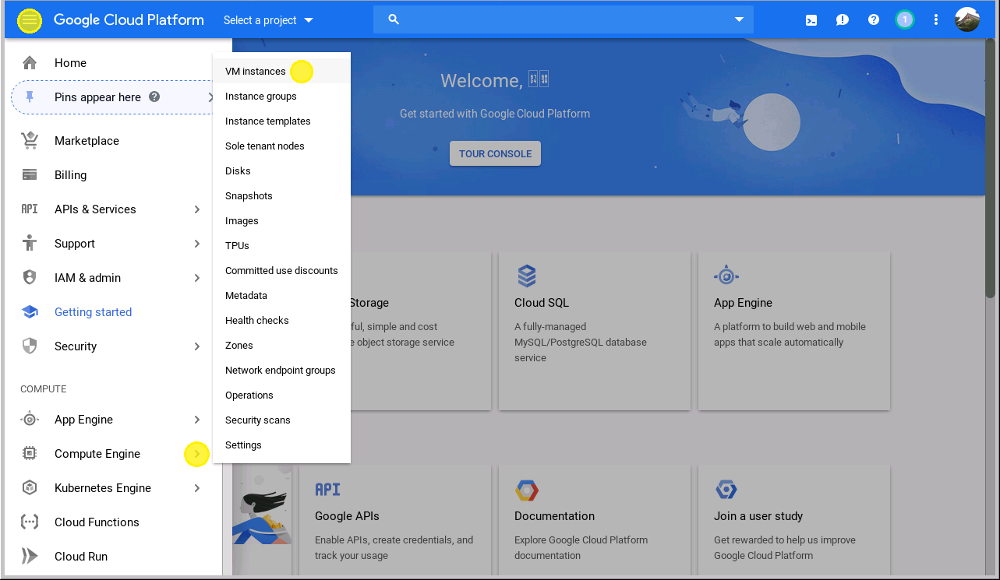
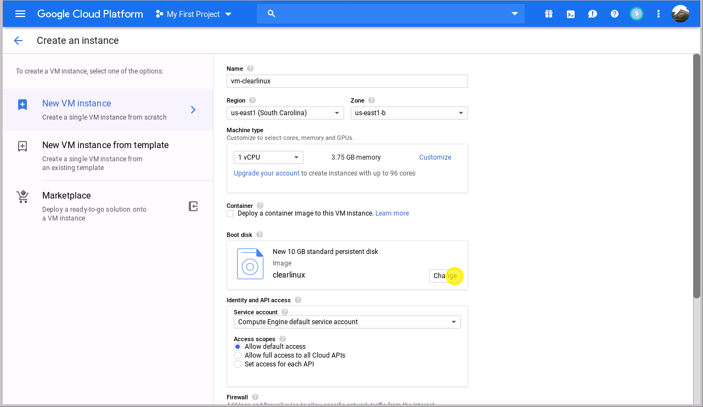
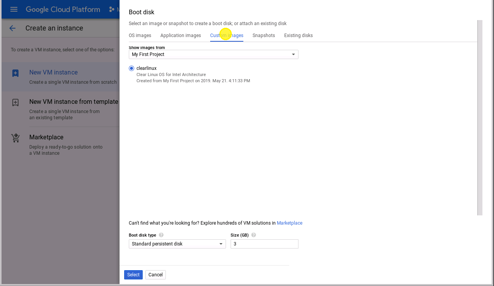
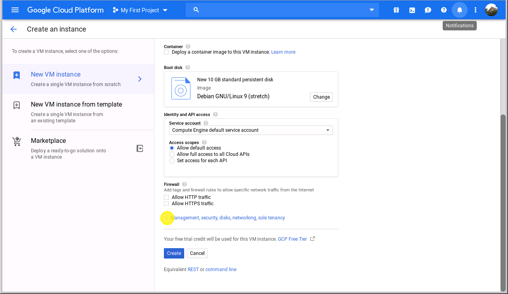

在 Google Cloud Platform* 上启动 Clear Linux* OS Compute Engine
本页说明在 Google Cloud Platform (GCP) 上创建 Clear Linux* OS 虚拟机实例的步骤。
必备条件
- 创建 Google 帐户和 GCP 计费帐户。
- 在 Linux PC 中生成和安装用户 SSH 密钥。该 PC 将连接至 GCP 中的虚拟机。
在 GCP 上安装 Clear Linux OS 虚拟机
在 Google Cloud Console 上登录 Google* 帐户。

图 1：Google 登录屏幕
Google Cloud Platform 使用 项目 管理资源。选择或创建新项目来托管 Clear Linux OS 虚拟机。
注解
请参阅 Quickstart Using a Linux VM 指南，了解在 GCP 上创建虚拟机实例的过程。
导航至最新的 Clear Linux OS release folder，查看当前发布的 GCE 映像，下载
clear-<release number>-gce.tar.gz映像档案文件。您无需解压缩映像档案文件，完整文件稍后将上传至 Google Cloud Storage。
创建 存储 Bucket 以托管上一步下载的 Clear Linux OS 映像源档案文件：
- 点击左上部屏幕菜单中的 导航菜单 图标。
- Select the item from the side bar on the left. You will be sent to the Storage Browser tool or the Cloud Storage overview page.
图 2：浏览 Google Cloud Storage
注解
创建 bucket 之前，最好需要创建一个计费帐户，将其链接至此项目。

图 3：Cloud Storage 浏览工具
点击 创建 BUCKET 按钮，进入 bucket 创建工具界面。bucket 的名称必须是唯一的，因为 Cloud Storage 中的所有 bucket 共享一个全局命名空间。
其余设置选项保留默认值，然后点击底部的 创建 按钮创建 Bucket。

图 4：设置 bucket 名称
创建 bucket 后，点击 Bucket 详细资料页上的 上传文件 按钮将 Clear Linux OS GCE 映像档案文件上传至指定的 bucket：

图 5：Cloud Storage bucket

图 6：上传映像源档案文件
图 7：导入完成
浏览 Compute Engine 映像库页：
点击左上部屏幕菜单中的 导航菜单 图标。
从左侧边栏选择 。
图 8：映像库
在 Compute Engine 映像库页面，点击 [+] CREATE IMAGE 菜单项创建定制映像：
图 9：创建映像
在虚拟机映像创建页上，将映像源类型更改为 Cloud Storage 文件。
在 来源 中，选择 浏览。
找到
clear-<release number>-gce.tar.gz文件，然后点击 选择。
图 10：利用导入的对象创建映像
接受所有默认选项，然后点击底部的 创建 按钮，将 Clear Linux GCE 映像导入映像库。

图 11：映像已创建
Clear Linux OS 映像导入后，可以启动一个运行 Clear Linux OS 的虚拟机实例：
- 点击左上部屏幕菜单中的 导航菜单 图标。
- 从左侧边栏选择 。
图 12：虚拟机实例目录
如果此项目中没有创建虚拟机实例，系统会提示您创建一个实例。
另外，也可以点击虚拟机实例页上的 创建实例 按钮创建虚拟机实例。

图 13：创建虚拟机

图 14：虚拟机实例列表
在 区域 中，根据 Best practices for Compute Engine regions selection 选择一个区域。
在 引导磁盘 中，点击 更改 按钮。
图 15：使用定制映像
选择 标签，以使用 Clear Linux OS GCE 映像。
图 16：选择 Clear Linux 引导磁盘创建虚拟机实例
向下滚动至虚拟机实例创建页的底部，展开 管理、安全、磁盘、联网、独占租区 群组。
图 17：设置 SSH 密钥
注解
Clear Linux OS 默认情况下不允许使用 root 帐户进行 SSH 登录。因此，您必须使用 SSH 公共密钥配置虚拟机实例，以便能够远程访问。
请参考 OS Security 了解详情。
点击 标签，复制并粘贴 SSH 公共密钥：

图 18：设置 SSH 密钥进行远程登录
警告
分配的用户名来自电子邮件地址
@前面的字符，包含在 SSH 密钥中。不允许使用符号 “.”，因为在 Clear Linux OS 中创建用户帐户时它是无效字符。点击 创建 按钮创建 Clear Linux OS 虚拟机。
Clear Linux 虚拟机实例已创建并分配了一个公共 IP 地址：

图 19：Clear Linux 虚拟机实例已创建并启动
利用上一步获得的 IP 地址以及与 SSH 公共密钥相关联的用户名，您现在可以通过 SSH 登录虚拟机：

图 20：SSH 登录 Clear Linux 虚拟机
{kind=link}
{kind=link}
{kind=link}
{kind=link}
{kind=link}
{kind=link}
{kind=link}
{kind=link}